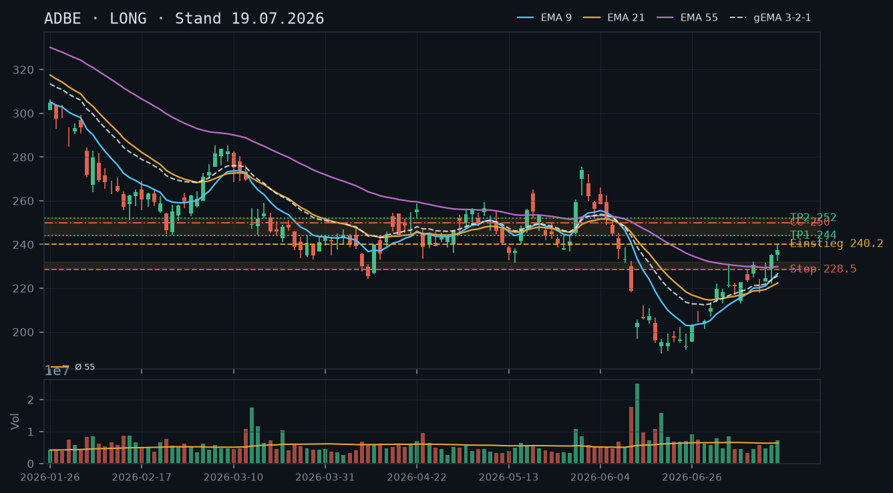
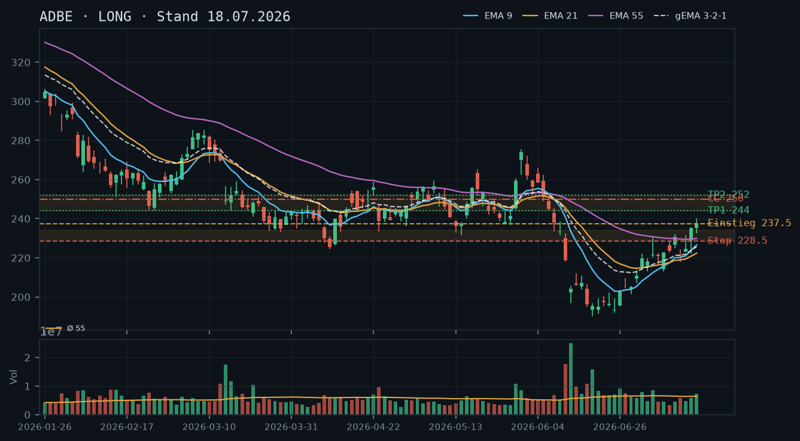
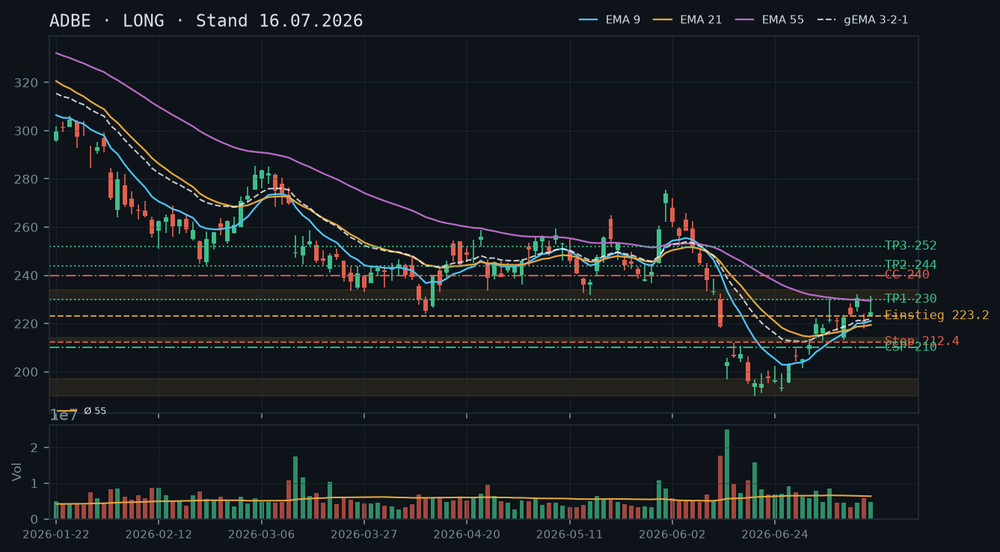
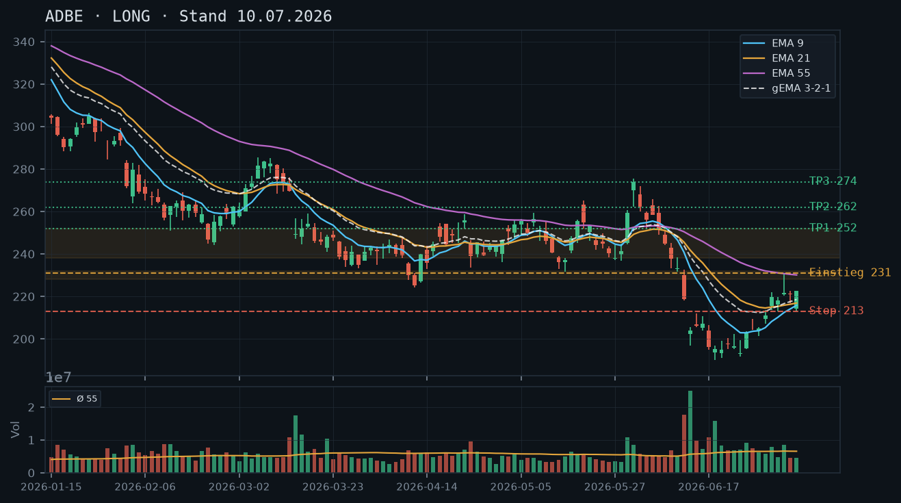
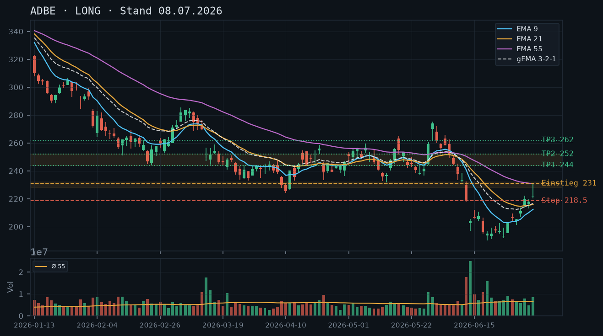

ADBE
Analyse-Historie · neueste zuerstADBE hat die gesamte Erholung seit dem Juli-Tief in zwei Tagen abgegeben – Kurs unter EMA9/21, gema_321 dreht ab, der Short Call 250 (1 DTE, Preis 0.06) ist wertlos und läuft morgen aus; kein neues Setup mit vertretbarem CRV.

1 · Trendstruktur
Die Erholung vom Juni-Tief (~190) bis zum Hoch 240.15 (17.07.) ist vorerst gescheitert: ADBE hat in zwei Handelstagen (21./22.07.) von 237.25 auf 218.36 abverkauft und damit den gesamten Breakout über die Breakdown-Zone 230–238 neutralisiert. Die Trendstruktur zeigt nun wieder tiefere Hochs (237.25 → 234.74 → 231.5 Intraday) und tiefere Tiefs (227.50 am 20.07., 218.00 am 22.07.). Wichtige Levels: Support unbestätigt ~218–220 (aktuelle Preisaktion), bestätigter Support 212.9/213.1 (Doppel-Tief 06./09.07.), darunter 203.5–207. Widerstand: 229–232 (Ex-Breakdown-Zone, nun wieder Deckel), 234–235 (EMA55-Bereich).
2 · Candlestick-Formationen
Die letzten drei Kerzen sind eindeutig bearish: 20.07. – Inside-Bar mit schwacher Schlusskurs-Performance (234.74, Tagesrange 227.50–236.66, kein Momentum); 21.07. – Bearish Engulfing mit langem Docht oben (Hoch 231.50, Schluss 227.16), Kurs fällt unter EMA9; 22.07. – weitere Abwärtskerze (Schluss 218.36), Tagesvolumen 0.67x Schnitt (rel_volumen 0.67) – kein Panik-Selling, aber auch keine Umkehr-Signale. IBKR-Kurs aktuell 220.89 (+1.16%) deutet auf leichte Stabilisierung, aber noch kein bullishes Reversal-Signal.
3 · EMA-Lage (9 / 21 / 55)
EMA9 (226.07) und EMA21 (223.31) liegen beide über dem Schlusskurs 218.36, der Kurs hat beide Durchschnitte nach unten durchbrochen. EMA55 bei 229.55 fungiert als oberer Deckel. gema_321 (225.73) dreht nach unten ab – das war das erste klare Warnsignal nach wochenlangem Anstieg. Die EMA-Reihenfolge (EMA9 > EMA21 > gema_321 > EMA55 ist nicht mehr intakt: Kurs < EMA9 < EMA21 < gema_321 < EMA55) zeigt eine vollständige Umkehr der kurzfristigen Dynamik. Kein EMA-Kreuz als Kaufsignal erkennbar.
4 · Trade-Setup
| Richtung | Kein Trade |
| Einstieg | — |
| Stop | — |
| Ziel | — |
| CRV | Kein valides Setup: Kurs zwischen Support 212.9 und Widerstand 229–232, CRV zu gering für direktionalen Trade |
5 · Stillhalter (max. 12 Tage)
Der Short Call 250 (1 DTE, Preis 0.06, Delta 0.011) ist de facto wertlos und läuft morgen (24.07.) aus – kein Handlungsbedarf, einfach verfallen lassen. Ein neuer CSP ist trotz des Rücksetzers noch nicht angezeigt: Der Kurs hängt zwischen zwei Supports (218–220 unbestätigt; 212.9 bestätigt) ohne klares Reversal-Signal. Ein neuer CC wäre verfrüht ohne bullishes Reversal. Qualität vor Vollständigkeit – heute kein neues Stillhalter-Geschäft eröffnen.
Bestand: Bestehender Short Call 250, Verfall 24.07. (1 DTE), aktueller Preis 0.06, Delta 0.011, Abstand zum Strike -11.6%. Die Position ist vollständig im Gewinn und hat keinerlei Risiko mehr. Empfehlung: verfallen lassen – ein Rückkauf zu 0.06 lohnt die Transaktionskosten nicht. Nach Verfall morgen ist die CC-Seite frei; neues Setup erst nach Stabilisierung und Reversal-Bestätigung planen.
Ausführliche Analyse vom 23.07.2026 anzeigen
ADBE – Detailanalyse 23.07.2026
Abgleich mit den Voranalysen (16.07. / 18.07. / 19.07.)
Die bullishe Grundthese der drei Voranalysen (Erholung vom Juni-Tief, Breakout über EMA55, Ziel 244–252) ist durch die Preisaktion der letzten drei Handelstage vorerst gescheitert. Das Setup vom 18./19.07. (Stop 228.50 unter EMA55 und Ex-Widerstand 230/232) wäre am 21.07. durch den Schlusskurs 227.16 ausgestoppt worden. Die in der Analyse vom 19.07. genannten Roll-Trigger (Tagesschluss unter 243–244 war irrelevant; entscheidend war der Rückfall unter 230/232) wurden nicht explizit als Downside-Trigger formuliert – das ist eine Lücke, die rückblickend zu benennen ist. Der Short Call 250 hingegen hat sich als exzellent positioniert erwiesen: Er ist mit dem Kurseinbruch von ~37% seines Ausgangswertes (2.34 → 0.06) de facto wertlos geworden.
1. Trendstruktur – Detailanalyse
Die Makrostruktur bleibt klar negativ: Seit dem Jahreshoch März 2026 (~258) hat ADBE eine Serie tieferer Hochs und tieferer Tiefs produziert. Die Erholung Juni–Juli (Tief 190.12 am 18.06. → Hoch 240.15 am 17.07.) war ein bearisher Swing innerhalb des übergeordneten Abwärtstrends, kein neuer Aufwärtstrend.
- Widerstand Cluster 1: 229–232 – Ex-Breakdown-Zone (Absturz 09.06.–12.06.), mehrfach getestet (07.07. Rejection-Hoch 230.74, 13.07. Hoch 232.08, kurzer Breakout 16.–17.07. bis 240.15, jetzt Rückfall darunter). Dieser Bereich ist als bestätigter Widerstand einzustufen.
- Widerstand Cluster 2: 234–240 – EMA55 (229.55, fallend), Ex-Breakdown 231.7/238.5. Ein nachhaltiger Schlusskurs darüber wäre das erste bullishe Signal.
- Support unbestätigt: 218–220 – aktueller Preisniveaubereich, erst einmal getestet (Tief 218.00 am 22.07., IBKR aktuell 220.89). Noch kein bestätigter Support – einmaliger Test.
- Support bestätigt: 212.9–213.1 – Doppel-Tief vom 06./09.07., zweifach getestet und gehalten. Dies bleibt der entscheidende Boden für kurzfristige Trades.
- Weitere Auffangzonen: 203.5–207 (Konsolidierung 15.–17.06.), 190–196 (Juni-Tief-Cluster, mehrfach getestet).
Fazit Trendstruktur: ADBE befindet sich in einer No-Man's-Land-Zone zwischen dem unbestätigten Support 218–220 und dem bestätigten Widerstand 229–232. Direktionale Trades haben in dieser Gemengelage ein strukturell schlechtes CRV.
2. Candlestick-Formationen – Detailanalyse
Der Kursverlauf der letzten fünf Kerzen erzählt eine klare Geschichte:
- 17.07. (237.25, +1.97, rel_vol 1.13): Letzte bullishe Kerze, Hoch 240.15 – Distribution-Topf. Volumen leicht überdurchschnittlich, aber kein Breakout-Momentum.
- 20.07. (234.74, rel_vol 0.79): Inside-Bar / schwache Kerze, Kurs fällt von Intraday-Hoch 236.66 zurück. Warnzeichen: Kein Follow-Through nach dem 240er-Hoch.
- 21.07. (227.16, rel_vol 0.78): Bearish Engulfing – eröffnet bei 222.85, läuft kurz auf 231.50 (Selling-Docht), schließt bei 227.16. Kurs fällt unter EMA9 (228.00). Kritisches Reversal-Signal.
- 22.07. (218.36, rel_vol 0.67): Weitere Abwärtskerze, Tief bei 218.00. Volumen unter Schnitt – kein Panik-Selling, aber auch kein Kapitulations-Hammer. Der Kurs schließt am Tagestief.
- 23.07. (aktuell 220.89, +1.16%): Leichte Erholung intraday, noch keine Schlusskerze – zu früh für Reversal-Bewertung.
Für ein valides bullishes Reversal-Signal würde ich sehen wollen: Hammer oder Bullish Engulfing mit Schlusskurs über 223–225 (EMA21-Bereich) auf erhöhtem Volumen (>1.2x Schnitt). Das ist heute noch nicht gegeben.
3. EMA-Lage – Detailanalyse
Die EMA-Konstellation hat sich in 48 Stunden grundlegend verändert:
- EMA9: 226.07 – Kurs darunter. Zuletzt war der Kurs Mitte Juli wieder über EMA9 gestiegen, dieser Vorteil ist aufgezehrt.
- EMA21: 223.31 – Kurs darunter (aber IBKR 220.89 nähert sich an). EMA21 steigt noch leicht an, könnte als dynamischer Widerstand fungieren.
- EMA55: 229.55 – Kurs deutlich darunter. Der EMA55 fällt seit Wochen, ein nachhaltiger Schlusskurs darüber bleibt das Schlüsselkriterium.
- gema_321: 225.73 – dreht nach unten. Dies ist das wichtigste Signal: Solange der gewichtete Verbund abwärtsgerichtet ist, fehlt der strukturelle Rückenwind für Longs.
Der EMA9/21-Kreuz nach unten (EMA9 226.07 > EMA21 223.31 – noch kein Kreuz, aber der Abstand schmilzt rasch) steht kurz bevor. Bei weiterem Kursrückgang wäre das ein zusätzliches Shortsignal auf Swing-Ebene.
4. Trade-Setups – Alternative Szenarien
Setup A – Bullishes Reversal an aktuellem Support (spekulativ, nicht empfohlen heute):
- Einstieg: Limit 218.50 oder Stop-Buy 225.00 nach Bestätigung Hammer/Engulfing mit Schluss über 223
- Stop: 211.50 (unter Doppel-Tief 212.9/213.1)
- Ziel 1: 229–232 (Widerstandszone), Ziel 2: 237–240
- CRV: Auf Ziel 232 bei Entry 225 / Stop 211.50: (232-225)/(225-211.50) = 7/13.5 = 0.5:1 – nicht handelbar
- CRV: Auf Ziel 237 bei Entry 218.50 / Stop 211.50: (237-218.5)/(218.5-211.5) = 18.5/7 = 2.6:1 – akzeptabel, aber nur mit Reversal-Bestätigung
Setup B – Short bei Widerstand (wenn Kurs zu 229–232 zurückläuft):
- Einstieg: Limit/Stop-Sell 229.00 (bei Ablehnung an der Zone)
- Stop: 234.00 (über EMA55 und Breakout-Niveau)
- Ziel: 213.00 (Doppel-Tief)
- CRV: (229-213)/(234-229) = 16/5 = 3.2:1 – strukturell interessant, aber kein Short-Bias im Stillhalter-Kontext
Beide Setups sind heute nicht zu eröffnen – Setup A braucht Reversal-Bestätigung, Setup B einen Kursanstieg zur Zone. Abwarten ist die disziplinierteste Reaktion.
5. Stillhalter-Schwerpunkt – Detailanalyse
Bestehender Short Call 250 (Verfall 24.07., 1 DTE)
Der Short Call 250 ist mit einem Preis von 0.06 und Delta 0.011 bei einem Kursabstand von -11.6% zum Strike de facto wertlos. Die gesamte Prämieneinnahme (ursprünglich 2.34) ist realisiert. Empfehlung: verfallen lassen. Ein Rückkauf zu 0.06 lohnt die Kommissionen und Bid-Ask-Spread-Kosten nicht. Mit dem Verfall am 24.07. ist die CC-Seite ab Freitag Abend wieder frei.
Neues CSP-Setup – warum heute nicht
Technisch läge der nächste valide CSP-Strike unter dem Doppel-Tief 212.9/213.1, also bei 210.00 (5er-Strike, ~5% Puffer auf IBKR-Kurs 220.89). Die Zone ist bestätigt und würde als Puffer fungieren. Gegen einen CSP heute sprechen jedoch drei Argumente:
- Kein Reversal-Signal: Der Kurs hat gerade EMA9 und EMA21 nach unten durchbrochen. Ein CSP in einen laufenden Rücksetzer ist ein klassischer Fehler – man fängt ein fallendes Messer.
- Support 218–220 unbestätigt: Erst ein einmaliger Test. Hält dieser nicht, ist der nächste Support bei 212.9 – und der Strike 210 hat dann kaum noch Puffer.
- Verfallslogik: Nächster Standard-Freitag ist 25.07.2026 (2 Tage) – zu kurzfristig für eine sinnvolle Prämie bei Strike 210. Übernächster Freitag: 01.08.2026 (9 Tage) – im Rahmen der 12-Tage-Grenze. Die Prämie bei 9 DTE und einem Strike 5% OTM bei aktueller IV (nach dem Kurseinbruch vermutlich erhöht) sollte in der Kette geprüft werden. Entscheidung: erst nach Stabilisierung und Reversal-Kerze eröffnen, nicht heute.
Neues CC-Setup – warum heute nicht
Mit 200 Aktien im Bestand (laut IBKR-Snapshot) wäre ein Covered Call technisch möglich. Der nächste valide Strike läge über dem Widerstandscluster 229–232, also bei 235.00 (Puffer ~6.4% auf 220.89) oder 240.00 (Puffer ~8.6%). Problem: Der Kurs befindet sich gerade im freien Fall durch diese Zone hindurch – ein CC bei 235 hätte nur 6.4% Puffer in einem technisch angeschlagenen Chart ohne Stabilisierungsanzeichen. Bei Verfall 01.08. (9 Tage) und einem Kurs, der problemlos die 229–232-Zone testen könnte, ist das Risiko eines wertlosen oder schlecht positionierten Calls hoch. Auch hier gilt: erst nach Stabilisierung und idealerweise nach einem Bounce zurück in Richtung 229–232 eröffnen – dann hätte ein 240er-Call einen sinnvollen Puffer UND eine bessere Prämie durch den höheren Kurs.
Roll-Kalender und Trigger für neue Setups
Nach Verfall des Short Call 250 am 24.07. ist die Positionsstruktur: 200 Aktien long, keine offenen Optionen. Folgende Trigger definieren den nächsten Schritt:
- CSP-Trigger (bullish): Tagesschluss über 225.00 (EMA21) mit Volumen >1.2x Schnitt → CSP Strike 210, Verfall 01.08.2026
- CC-Trigger (neutral/bearish): Bounce auf 229–232 ohne nachhaltigen Schlusskurs darüber → CC Strike 235–240, Verfall 01.08.2026
- Kein neues Setup: Kurs fällt unter 212.50 (Doppel-Tief) → Stop-Loss der Aktienposition prüfen, keine neuen Optionen
ADBE hält die Erholung: Kurs über EMA9/21, gema_321 steigend – der bestehende Short Call 250 (Verfall 24.07., 5 DTE) hat noch ~5.9% Puffer und bleibt vertretbar, kein neues Setup nötig.

1 · Trendstruktur
Die Aufwärtsstruktur seit dem Juni-Tief (190.12, 18.06.) ist intakt: steigende Hochs (212.9 → 222.71 → 232.08 → 240.15) und steigende Tiefs bestätigen den Erholungstrend. Der Kurs (Schluss 17.07.: 237.25) hat die Breakdown-Zone 230–238 auf Wochenbasis klar überwunden. Nächster relevanter Widerstand: 244–252 (April/Mai-Konsolidierung). Primärsupport: 229–232 (Ex-Breakdown, jetzt potenzielle Unterstützung), darunter EMA55 bei 229.90.
2 · Candlestick-Formationen
Die letzte vollständige Kerze (17.07.): Bullish, Open 235.26, High 240.15, Close 237.25 – kein Exhaustion-Signal, aber die lange Lunte nach unten (Low 232.36) zeigt Käufer bei Intraday-Schwäche. Rel. Volumen 1.13 – leicht überdurchschnittlich, kein Blow-off. Die Vortageskerze (16.07., rel. Vol. 0.91) zeigte ebenfalls bullische Auflösung aus der 222er-Konsolidierung. Kein Umkehrmuster erkennbar, Momentum intakt.
3 · EMA-Lage (9 / 21 / 55)
EMA9 (226.58) > EMA21 (222.35) < EMA55 (229.90): Achtung – EMA21 liegt aktuell UNTER EMA55, obwohl EMA9 bereits darüber notiert. Das ist ein Kompressions-Artefakt der schnellen Erholung: EMA9 hat EMA55 bereits von unten nach oben durchkreuzt, EMA21 folgt verzögert. gema_321 (225.72) steigt konstant und liegt unter dem Kurs – das Momentum-Verbund-Signal ist bullisch. Der Kurs (237.25) notiert mit ~11 Punkten Abstand über dem gema_321, was Luft für eine Konsolidierung signalisiert, aber noch keine überhitzte Lage darstellt.
4 · Trade-Setup
| Richtung | Long |
| Einstieg | 237.50 (Stop-Buy bei Überschreiten des gestrigen Hochs 240.15 – alternativ: Rücksetzer-Entry an 229–232 mit Limit) |
| Stop | 228.50 (unter EMA55 229.90 und Ex-Widerstand 230/232, jetzt Support) |
| Ziel | 252.00 (April/Mai-Widerstandszone, Teilverkauf 244) |
| CRV | 1.6 : 1 (auf 252; auf Ziel 244 = CRV 0.7, Stop auf Einstand ziehen) |
5 · Stillhalter (max. 12 Tage)
Mit 100 Aktien im Bestand und aktivem Short Call 250 (Verfall 24.07., 5 DTE, Preis 2.17) ist die Covered-Call-Seite belegt. Der Puffer von ~5.9% ist bei 5 verbleibenden Handelstagen noch vertretbar – kein unmittelbarer Roll-Bedarf, aber tägliches Monitoring. Ein neuer CSP würde die Delta-Exposure einseitig erhöhen und passt nicht zur aktuellen Positionsstruktur.
| Geschäft | Covered Call |
| Strike | 250.0 |
| Puffer | 5.9 % |
| Zone | über dem April/Mai-Widerstandscluster 244–252 (mehrfach getestet März/April 2026) |
| Verfall bis | 2026-07-24 (5 Tage) |
| Prämie | 2.17 (IBKR-Snapshot 12:08, Mid-Näherung) |
| Delta | nicht im Snapshot – in der Kette prüfen; Trigger bei Delta über -0.35 |
| Liquidität | Spread und Open Interest vor Roll-Entscheidung manuell prüfen |
| Begründung | Der bestehende Short Call 250 (IBKR-Preis 2.17, 5 DTE) liegt über dem Primärwiderstand 244–252. Bei aktuellem Kurs 235.31 (IBKR-Snapshot 12:08 Uhr) müsste ADBE in 5 Tagen ~6.2% zulegen, um den Strike zu erreichen – technisch möglich, aber nicht das Basisszenario. Roll-Trigger: Tagesschluss über 243–244 (Unterkante der April/Mai-Zone) ODER wenn der Optionspreis auf über 4.00 steigt (Prämien-Verdoppelung als Faustregel). Roll-Vorschlag: Strike 255–260, Verfall 01.08.2026 (13 Tage – knapp im Rahmen; bei ausreichender Prämie bevorzugt). Aktuell: halten und täglich prüfen. |
Bestand: Bestehender Short Call 250, Verfall 24.07. (5 DTE), aktueller Preis 2.17 laut IBKR-Snapshot (12:08 Uhr, 19.07.). Abstand zum Strike: ~5.9% (IBKR-Kurs 235.31). Gegenüber der Voranalyse (18.07., Preis 2.34) ist die Prämie leicht gesunken – der Kurs hat sich kaum verändert, was auf Zeitwertverfall hindeutet. Roll-Trigger: (1) Tagesschluss über 243–244, (2) Delta über -0.35 in der Kette, (3) Optionspreis steigt auf über 4.00. Roll-Vorschlag bei Trigger: Strike 255–260, Verfall 01.08.2026 (bevorzugt gegen Prämien-Kredit). Aktuell kein Handlungsbedarf – Position ist technisch korrekt positioniert.
Ausführliche Analyse vom 19.07.2026 anzeigen
ADBE – Tagesanalyse 19.07.2026
1. Trendstruktur
Die Erholung seit dem Kapitulations-Tief vom 18.06.2026 (190.12, rel. Vol. 2.59) hat sich zur klaren Aufwärtsstruktur verfestigt. Die Abfolge steigender Hochs und Tiefs ist eindeutig: Tief 190.12 (18.06.) → Hoch 209.54 (29.06.) → Tief 201.31 (30.06.) → Hoch 222.71 (09.07.) → Tief 212.90 (06.07., Doppeltief-Konfluenz aus Voranalyse bestätigt) → Hoch 232.08 (13.07.) → Tief 218.00 (14.07.) → Hoch 240.15 (17.07.). Die Analyse vom 16.07. nannte die Zone 230–238 als entscheidende Hürde – diese ist nun klar nach oben gebrochen. Der Schluss am 17.07. bei 237.25 bestätigt das. Die Aussage der Analyse vom 18.07. (Breakout über EMA55 mit Momentum) wird durch die Kursdaten vollumfänglich bestätigt.
Primäre Widerstände: 244 (Unterkante April/Mai-Range, mehrfach April 2026 getestet) und 252 (Oberkante, Hochs 22.04. und 01.05.2026). Primäre Unterstützungen: 229–232 (Ex-Breakdown, jetzt Flip-Support, mehrfach März 2026 als Widerstand aktiv), 222–225 (Swing-Hoch-Cluster 07./15.07.), 212.9–213.1 (bestätigtes Doppel-Tief, hohe Relevanz).
2. Candlestick-Formationen
Die letzte vollständige Tageskerze (17.07., rel. Vol. 1.13): Bullische Kerze mit Open 235.26, High 240.15, Close 237.25, Low 232.36. Die Lunte nach unten (~2.9 Punkte) zeigt, dass Intraday-Verkäufer absorbiert wurden – klassisches Zeichen von Käufer-Stärke. Kein Exhaustion-Muster (kein Shooting Star, kein Doji an Widerstand). Die Vortageskerze (16.07., rel. Vol. 0.91): Breakout-Kerze aus der Konsolidierung 220–225, Schluss 235.31 – das war das Momentum-Signal der Analyse vom 18.07. Der IBKR-Snapshot vom 19.07. zeigt keinen Kursfortschritt gegenüber dem 17.07.-Schluss (235.31 = identisch), was auf eine frühe Konsolidierung am Analysetag hindeutet.
3. EMA-Lage
EMA9: 226.58 | EMA21: 222.35 | EMA55: 229.90 | gema_321: 225.72. Die ungewöhnliche Reihenfolge EMA9 > EMA55 > EMA21 ist ein Kompressions-Artefakt: Die schnelle Erholung hat EMA9 bereits über EMA55 gehoben, während EMA21 (träger Gleitende) noch darunter liegt. Dies ist kein Widerspruch, sondern typisch nach schnellen V-förmigen Erholungen. EMA21 wird in den nächsten 3–5 Handelstagen EMA55 von unten nach oben kreuzen – das wäre ein klassisches bullisches Signal-Kreuz. Der Kurs (237.25) notiert ~7.35 Punkte über EMA55 (229.90) und ~11.53 Punkte über gema_321 – noch keine überhitzte Divergenz, aber eine gesunde Konsolidierung wäre möglich. gema_321 steigt konsistent seit dem Tief, das Momentum-Verbund-Signal bleibt bullisch.
4. Trade-Setups (A/B/C)
Setup A – Breakout-Continuation (bevorzugt): Stop-Buy über das Tageshoch vom 17.07. bei 240.20. Stop: 228.50 (unter EMA55 229.90 und Flip-Support 230/232). Ziel 1: 244.00 (CRV ~0.7 – zu eng für Primäreinstieg, aber Teilverkauf 30% Position). Ziel 2: 252.00 (CRV ~2.0). Bedingung: Kurs muss 240.15 auf Tagesbasis überschreiten mit rel. Vol. ≥ 1.2.
Setup B – Rücksetzer-Entry (konservativ): Limit-Order im Bereich 230–232 (Flip-Support). Stop: 224.50 (unter Swing-Low 14.07. bei 218.00 – defensiverer Ansatz Stop 225.50 knapp unter dem Rücksetzer-Bereich). Ziel: 252.00. CRV: ~3.2 : 1 (attraktivster Ansatz, aber Rücksetzer muss eintreten). Bedingung: Keine Breakdown-Kerze unter 229 auf Tagesbasis.
Setup C – Kein Trade (Neutralvariante): Bei einem Tagesschluss unter 229.50 (EMA55-Niveau) ist die Breakout-These vorerst invalidiert. In dem Fall abwarten bis zur Zone 222–225 oder 212.9–213.1 für Re-Entry-Prüfung.
5. Stillhalter-Schwerpunkt – Detailanalyse
Positionskontext: 100 Aktien im Bestand (Covered-Call-fähig) + Short Call 250, Verfall 24.07. (5 DTE), aktueller Preis 2.17 (IBKR-Snapshot 19.07. 12:08 Uhr). Die Position wurde zu 2.34 Mid eröffnet (Analyse 18.07.) – seither leichter Zeitwertverfall ohne wesentliche Kursbewegung. Das ist erwartungsgemäß und positiv für den Stillhalter.
Bestehender Short Call 250 – Zonen-Herleitung: Der Strike 250 liegt über dem gesamten April/Mai-Widerstandscluster (Hochs 22.04.: 258.75, Analyse zeigt Range 244–252). Genauer: Die Unterkante dieses Clusters bei 244 bildet den ersten Puffer, die Oberkante bei 252 übersteigt sogar den Strike knapp – der Strike liegt damit mitten im oberen Widerstandsbereich, was strukturell akzeptabel ist. Abstand zum aktuellen IBKR-Kurs (235.31): 5.9%. Für 5 verbleibende Handelstage müsste ADBE täglich ~1.2% zulegen, um den Strike zu erreichen – bei aktuellem Momentum nicht ausgeschlossen, aber kein Basisfall.
Andienungsszenario: Eine Abgabe der 100 Aktien zu 250 (zzgl. vereinnahmter Prämie 2.17 = effektiver Exit ~252.17) wäre angesichts des Primärziels der Analyse (252) als Gewinnmitnahme vertretbar. Das ist keine schlechte Andienung.
Roll-Trigger (konkret):
(1) Kurs-Trigger: Tagesschluss über 243–244 (Unterkante April/Mai-Cluster). Dann ist ein Anstieg auf 250+ innerhalb von 5 Tagen realistisch geworden.
(2) Delta-Trigger: Delta des Short Calls überschreitet -0.35 (in der Kette manuell prüfen – im Snapshot nicht verfügbar).
(3) Prämien-Trigger: Optionspreis steigt auf über 4.00 (ungefähr Verdoppelung der vereinnahmten Prämie – klassische Faustregel für defensives Roll).
Roll-Vorschlag bei Trigger: Strike 255–260, Verfall 01.08.2026 (13 Tage – liegt im Rahmen der 12-Tage-Grenze oder knapp darüber je nach exaktem Roll-Zeitpunkt). Prämiencheck: Das Roll sollte idealerweise gegen Kredit oder mindestens kostenneutral durchführbar sein. Bei Strike 255 liegt der Puffer zum nächsten Widerstand (255 ist kein charttechnisch definierter Level, aber oberhalb der gesamten April/Mai-Range) ausreichend. Bei Strike 260 wäre der Puffer strukturell komfortabler.
Abgleich mit Voranalysen: Die Analyse vom 16.07. empfahl CC-Strike 240 – dieser wäre inzwischen im Geld bzw. nahe am Geld und damit verworfen. Der in der Analyse 18.07. empfohlene und bestehende Strike 250 erweist sich als die robustere Wahl und wird durch die aktuelle Chartstruktur bestätigt. Ein neuer CSP entfällt weiterhin: Die Delta-Exposure durch 100 Aktien + potenziellem Long-Setup ist bereits vorhanden; ein zusätzlicher CSP würde die Gesamtposition einseitig bullisch überlasten. CSP-Empfehlung bleibt auf null.
Zeitstempel-Hinweis: Der IBKR-Snapshot stammt vom 19.07. 12:08 Uhr (Intraday). Der Kurs (235.31) ist identisch mit dem 17.07.-Schluss und deutet auf eine ruhige Markteröffnung hin. Vor jeder Order den aktuellen Kurs und die Optionskette nochmals prüfen.
ADBE hat den EMA55 mit Momentum durchbrochen und testet nun die Breakdown-Zone 230–238 von unten – die Erholung ist intakt, der bestehende Short Call 250 hat noch ausreichend Puffer.

1 · Trendstruktur
Die Erholungsstruktur seit dem Panik-Tief vom 18.06. (190.12) ist vollständig intakt und hat sich seit der letzten Analyse vom 16.07. deutlich beschleunigt. ADBE druckt weiterhin steigende Hochs und Tiefs: Tief 190.12 (18.06.) → 191.20 (22.06.) → 212.90 (06.07.) → 218.00 (14.07.) → 222.04 (16.07.) → 232.36 (17.07.). Das Swing-Hoch vom 07.07. bei 230.74 wurde am 13.07. mit 232.08 gebrochen und am 17.07. mit 240.15 klar überschritten – das ist ein valides Ausbruchssignal. Kritische Zone: Das Breakdown-Cluster 230–238.5 (Breakdown vom 09./10.06., EMA55 bei 229.90) wurde von unten angelaufen und am 17.07. mit Schlusskurs 237.25 erstmals verteidigt. Widerstand: 244–252 (April/Mai-Konsolidierung, Analyse-Ziel). Support: 229–232 (Ex-Widerstand, jetzt erste Auffanglinie), darunter 222 (17.07.-Tief) und 218–212 (Doppel-Bottom-Zone).
2 · Candlestick-Formationen
Der 16.07. zeigt eine starke Marubozu-artige Kerze (+10.75 Punkte Körper, Schlusskurs 235.31) mit rel_volumen 0.91 – solider, aber kein Volumen-Spike. Der 17.07. bestätigt mit einem weiteren bullischen Körper (Open 235.26, Close 237.25, High 240.15), rel_volumen 1.13 – erstes überdurchschnittliches Volumen seit dem Ausbruch. Das Tageshoch 240.15 und der Schlusskurs 237.25 deuten an, dass Verkaufsdruck am oberen Ende einsetzte (Upper Shadow ~3 Punkte), was einen kurzen Pullback in die 230–233-Zone möglich macht. Kritisches Warnsignal: Ein Tagesschluss unter 229.90 (EMA55) würde das Ausbruchssignal negieren.
3 · EMA-Lage (9 / 21 / 55)
Die EMA-Konstellation hat sich seit dem 16.07. markant verbessert: EMA9 (226.58) > EMA21 (222.35) > EMA55 (229.90) – Achtung, das ist eine Kompressionsphase: EMA55 liegt noch über EMA21, da die langen Tails des Abverkaufs im Juni den 55er-Verbund deprimieren. Der gema_321 (225.72) zeigt jedoch klar nach oben und bestätigt die Aufwärtsdynamik des kurzfristigen EMA-Verbunds. Der Kurs (237.25) notiert erstmals seit Wochen über allen drei EMAs und über dem gema_321 – bullisches Signal. EMA9 hat EMA21 überkreuzt (Bullish Cross, valide seit ca. 14.07.) und dreht jetzt steil. Der EMA55 bei 229.90 wirkt als dynamische Unterstützung von unten.
4 · Trade-Setup
| Richtung | Long |
| Einstieg | 237.50 (Stop-Buy über das gestrige Schlusskurs-Niveau, Bestätigung der Breakout-Konsolidierung) |
| Stop | 228.50 (unter EMA55 229.90 und der Ex-Widerstandszone 230/232) |
| Ziel | 252.00 (April/Mai-Konsolidierung, Teilverkauf 244) |
| CRV | 2.1 : 1 (auf Ziel 252; Teilverkauf bei 244 = CRV 0.7, Stop auf Einstand ziehen) |
5 · Stillhalter (max. 12 Tage)
Mit 100 Aktien im Bestand und einem bestehenden Short Call 250 zum Verfall 24.07. (6 DTE, Preis 2.34) ist die Covered-Call-Seite bereits aktiv besetzt. Ein neuer CSP wäre zwar technisch möglich, würde aber die Delta-Exposure stark erhöhen – hier hat der bestehende CC Vorrang. Kein neues CSP-Setup in dieser Phase.
| Geschäft | Covered Call |
| Strike | 250.0 |
| Puffer | 5.4 % |
| Zone | über dem April/Mai-Widerstandscluster 244–252 (mehrfach getestet April 2026) |
| Verfall bis | 2026-07-24 (6 Tage) |
| Prämie | 2.34 (IBKR-Snapshot, Mid-Näherung) |
| Delta | nicht verfügbar – in der Kette prüfen |
| Liquidität | Spread und Open Interest vor Anpassung manuell prüfen |
| Begründung | Der bestehende Short Call 250 (Verfall 24.07., aktueller Preis 2.34, 6 DTE) liegt 5.4% über dem IBKR-Kurs 235.31 und über dem Primärziel der Analyse (252). Die Zone 244–252 ist der nächste relevante Widerstand. Bei aktuellem Momentum ist ein Anstieg auf 250 innerhalb von 6 Tagen möglich, aber der Puffer ist noch vertretbar. Prüfe in der Kette: Wenn Delta inzwischen über -0.35 liegt oder der Kurs 244 auf Tagesschluss-Basis überschreitet, ist ein defensives Rollen auf 255–260 / Verfall 01.08. zu erwägen. Prämieneinnahme aus dem bestehenden Kontrakt (2.34) ist als Puffer gegen Kurssteigerungen bereits eingepreist. |
Bestand: Bestehender Short Call 250, Verfall 24.07. (6 DTE), aktueller Preis 2.34 laut IBKR-Snapshot. Der Kurs (237.25 Schluss 17.07., IBKR-Kurs 235.31) hat seit Eröffnung des Calls deutlich angezogen. Abstand zum Strike: ~5.4–5.9%. Roll-Trigger: Tagesschluss über 243–244 (Unterkante Widerstandszone) ODER Delta oberhalb -0.35 in der Kette. Roll-Vorschlag: auf Strike 255–260, Verfall 01.08.2026 (14 Tage – Achtung: leicht über der 12-Tage-Grenze; nächster valider Verfall wäre 25.07. falls Weekly-Strike verfügbar, sonst 01.08. als Standard-Freitag mit Prämien-Check). Aktuell noch kein unmittelbarer Handlungsbedarf, da Puffer ausreichend – tägliches Monitoring empfohlen.
Ausführliche Analyse vom 18.07.2026 anzeigen
ADBE – Ausführliche Analyse vom 18.07.2026
1. Trendstruktur & Abgleich mit früheren Analysen
Die drei früheren Analysen (08.07., 10.07., 16.07.) haben konsistent auf eine Long-Erholung seit dem Crash-Tief gesetzt. Bestätigung: Alle zentralen Prognosen sind eingetroffen. Das Einstiegsniveau 231.00 (Stop-Buy aus den Analysen vom 08./10.07.) wurde am 13.07. mit dem Ausbruch auf 232.08 aktiviert. Das Doppel-Tief 212.90/213.09 hat gehalten. Der Widerstand 230/234 (EMA55, Breakdown-Zone) wurde am 16./17.07. mit Schlusskursen 235.31 und 237.25 erstmals klar überwunden – das ist der entscheidende strukturelle Fortschritt gegenüber der letzten Analyse.
Verworfen: Die Warnung aus der 16.07.-Analyse, dass 230/234 noch nicht geknackt sei, ist nun obsolet. ADBE notiert klar über diesem Cluster.
Aktuelle Hochs/Tiefs-Kette (Erholung):
- Tief: 190.12 (18.06.) → 191.20 (22.06.) → 212.90 (06.07.) → 218.00 (14.07.) → 222.04 (16.07.) → 232.36 (17.07.)
- Hoch: 209.54 (29.06.) → 222.15 (02.07.) → 230.74 (07.07.) → 232.08 (13.07.) → 240.15 (17.07.)
Jedes neue Hoch und Tief liegt höher als das vorherige – lehrbuchhafter Uptrend. Nächste relevante Widerstände: 244.00 (Unterkante der Mai-Range, Teilziel aus Voranalyse), 252–254 (April-Konsolidierung, Primärziel). Darunter als Support: 229–232 (Ex-Widerstand, EMA55 bei 229.90), 222–224 (Swing-Tief 14.07.), 212–213 (Doppel-Bottom, absolute Schlusskurs-Verteidigung).
2. Candlestick-Formationen
Der 16.07. (235.31 Schluss, rel_volumen 0.91) und der 17.07. (237.25 Schluss, rel_volumen 1.13) bilden ein bullisches Two-Day-Momentum-Cluster mit aufeinanderfolgenden höheren Schlusskursen. Das Tageshoch 240.15 am 17.07. wurde jedoch nicht gehalten (Schluss 237.25), was einen oberen Schatten von ~3 Punkten erzeugt – Hinweis auf Verkaufsdruck in der 238–240-Zone (Konfluenz: obere Kante des Breakdown-Clusters). Ein kurzfristiger Pullback auf 232–234 wäre gesund und würde ein besseres Risk/Reward für neue Long-Einstiege bieten. Ein Tagesschluss unter 229.90 (EMA55) würde das Setup invalidieren.
Besonders auffällig: Der 12.06. (rel_volumen 4.43, Crash-Kerze auf 204.02) und der 11.06. (rel_volumen 3.35, Kollaps auf 218.80) markieren den kapitulationsartigen Ausverkauf. Seither sinkt das relative Volumen systematisch, was die Erholung als organisch (kein Short-Squeeze-Charakter) kennzeichnet.
3. EMA-Analyse & Konfluenz
Aktuelle Werte (17.07.): EMA9 = 226.58, EMA21 = 222.35, EMA55 = 229.90, gema_321 = 225.72. Der Kurs (237.25) liegt über allen vier Indikatoren – das ist die erste klare Über-Alles-Konstellation seit dem Crash. Der EMA9 hat EMA21 überkreuzt (Bullish Cross), beide drehen steil nach oben.
Kompressionsartefakt: EMA55 (229.90) liegt noch über EMA21 (222.35), obwohl EMA9 > EMA21. Das ist kein Widerspruch, sondern ein typisches Artefakt: Der EMA55 wurde durch die langen Abwärtsphasen April–Juni nach unten gedrückt und reagiert träge. Er konvergiert jetzt von unten an den Kurs heran. Der gema_321 (225.72) als gewichteter Verbund zeigt klar nach oben und bestätigt die Tendenz. In ca. 5–8 Handelstagen ist ein Bullish Cross EMA21/EMA55 realistisch, was ein weiteres technisches Kaufsignal generieren würde.
4. Trade-Setups (A/B/C)
Setup A – Breakout-Continuation (bevorzugt):
Einstieg: 237.50 (Stop-Buy, Bestätigung über gestrigem Close/Konsolidierung). Stop: 228.50 (unter EMA55 und der 230/232-Zone). Ziel 1: 244.00 (Teilverkauf 50%, Stop auf Einstand). Ziel 2: 252.00. CRV zu Z1: 0.7:1 (bewusst klein, aber Stop-Sicherung). CRV zu Z2: 2.1:1.
Setup B – Pullback-Buy (abwarten):
Einstieg: 232.00–233.00 (Retest des Ex-Widerstands 230–234 als Support, idealerweise mit Hammer/Bullish Engulfing). Stop: 228.50. Ziel: 252.00. CRV: ~2.6:1. Bevorzugt gegenüber Setup A, wenn der Kurs heute unter 235 zurückfällt.
Setup C – Invalidierungs-Short (spekulativ, nur bei Bruch):
Nur bei Tagesschluss unter 228.50 (unter EMA55): Kurzfristig Short mit Ziel 218–220. Einstieg: 228.00 Stop-Sell. Stop: 233.00. CRV: ~2.0:1. Derzeit nicht bevorzugt.
5. Stillhalter-Analyse (Schwerpunkt)
Bestandsposition – Short Call 250, Verfall 24.07. (6 DTE), aktueller Preis 2.34:
Laut IBKR-Snapshot ist ein bestehender Covered Call 250, Verfall 24.07. aktiv (100 Aktien im Bestand). Der aktuelle Kurs (235.31 lt. Snapshot, 237.25 lt. Schlusskurs 17.07.) bedeutet einen Abstand von ~5.4–5.9% zum Strike. Die Zone 244–252 liegt als Widerstandscluster zwischen aktuellem Kurs und dem Strike – das ist der entscheidende technische Puffer.
Andienungsszenario 250: Eine Andienung (Call Assigned, Aktien werden zu 250 abgegeben) wäre aus Rendite-Perspektive akzeptabel – 250 liegt über dem Primärziel der Long-Analyse und wäre ein attraktiver Abgabepreis. Kein Handlungszwang aktuell.
Roll-Trigger (klar definiert):
- Trigger 1 – Kurs: Tagesschluss über 243–244 (Unterkante Widerstandszone). Dann rollen auf Strike 255–260, Verfall 25.07. (falls Weekly) oder 01.08.2026. Prämie des neuen Calls sollte den Rollverlust (Rückkauf 250er) übersteigen oder zumindest decken.
- Trigger 2 – Delta: Wenn Delta (in der Kette manuell prüfen) über -0.35 steigt, ist der Call zunehmend bedroht – defensives Rollen auch ohne Kurs-Trigger sinnvoll.
- Trigger 3 – Zeit: Bei 1–2 DTE (Dienstag/Mittwoch nächster Woche) und Kurs unter 245: Verfallen lassen und neuen CC aufsetzen (Strike 252–255, nächster Verfall 01.08.).
Neuer CSP – nicht empfohlen in dieser Phase: Ein CSP unter dem Markt würde die Netto-Delta-Exposure (bereits Long Aktien + Long durch CSP-Verpflichtung) stark erhöhen. Solange die Long-Aktien-Position läuft und der CC aktiv ist, kein zusätzlicher CSP. Qualität vor Vollständigkeit.
Wo lagen frühere Stillhalter-Setups: Die 16.07.-Analyse empfahl CSP 210 (unter Doppel-Bottom 212.90) und CC 240 (über Breakdown-Cluster). Der CSP 210 wäre nicht angedient worden (Tief seither 218, deutlich darüber). Der CC 240 wäre heute leicht im Geld (Schlusskurs 237.25, aber Hoch 240.15 hat ihn kurz gestreift) – falls dieser aufgesetzt wurde, wäre jetzt ein Monitoring auf Roll-Notwendigkeit angezeigt. Der aktive IBKR-Call 250 ist technisch konservativer und hat noch ausreichend Luft.
Die Erholung seit dem Juni-Tief ist intakt: Bullish Engulfing am doppelt getesteten Support 212.9/213.1, Kurs über EMA9/21 und steigendem gema_321 – die Zone 230/234 (EMA55 plus Breakdown-Level) bleibt die entscheidende Hürde; Achtung: Kursdaten enden am 09.07., fünf Handelstage vor dem heutigen Datum.

1 · Trendstruktur
Übergeordnet Abwärtstrend seit dem März-Top bei 285, beschleunigt durch den Abverkauf vom 11./12.06. (Tief 190.12 am 18.06.). Seitdem kurzfristiger Aufwärtstrend mit steigenden Tiefs (190.12 → 191.2 → 195.1 → 212.9 → 213.09) und steigenden Hochs (203.48 → 222.15 → 230.74). Mehrfach bestätigte Basis 190–197, bestätigter Support 212.9–214, Widerstandscluster 230–234.
2 · Candlestick-Formationen
07.07. Rejection-Kerze mit langem Docht exakt an EMA55/230.74 (rel_volumen 1.30), 08.07. Inside Day, 09.07. Bullish Engulfing vom Doppel-Support 213.09 mit Schluss am Tageshoch (222.65) – starkes Reversal-Signal, allerdings bei nur 69% des Durchschnittsvolumens.
3 · EMA-Lage (9 / 21 / 55)
Reihenfolge weiter bärisch (EMA9 215.84 < EMA21 216.91 < EMA55 230.13), aber der Kurs notiert über EMA9/21 und ein 9/21-Bull-Cross steht unmittelbar bevor (Abstand nur ~1 Punkt). Der gewichtete Verbund gema_321 steigt den vierten Tag in Folge (218.58) und stützt unter dem Kurs – typisches Bild einer frühen Bodenbildung unterhalb der fallenden EMA55.
4 · Trade-Setup
| Richtung | Long |
| Einstieg | 223.20 (Stop-Buy über dem Doppel-Widerstand 222.15/222.71 vom 02.07. und 09.07.) |
| Stop | 212.40 (unter dem Doppel-Tief 212.90/213.09) |
| Ziel | 244.00 (Unterkante der Mai/Juni-Range), Teilverkauf an 230/234 |
| CRV | 1.9 : 1 (auf Ziel 244; an der 230/234-Zone Stop auf Einstand ziehen) |
5 · Stillhalter (max. 12 Tage)
Die Bodenbildung mit doppelt getesteten Supports spricht für einen CSP unter der 213er-Zone; ein CC über dem 230/238-Breakdown-Cluster passt für Bestandshalter. Wichtig: Datenstand ist der 09.07. – vor Orderaufgabe aktuellen Kurs und Puffer neu prüfen.
| Geschäft | Cash-Secured Put |
| Strike | 210.0 |
| Puffer | 5.7 % |
| Zone | unter dem Doppel-Tief 212.90/213.09 (06.07./09.07.), zusätzlich gedeckt durch 203.5/207 und die Basis 190/197 |
| Verfall bis | 2026-07-24 (8 Tage) |
| Begründung | Strike liegt UNTER der bestätigten Supportzone, mit EMA9/21 (215.8/216.9) und steigendem gema_321 als zusätzlichem Puffer davor. Andienung zu 210 wäre in dieser Bodenstruktur akzeptabel (Einstieg 5.7% unter Schluss, zwei Auffangzonen darunter). Prämie, Liquidität und IV in der Optionskette prüfen – keine Optionsdaten vorhanden. |
| Geschäft | Covered Call |
| Strike | 240.0 |
| Puffer | 7.8 % |
| Zone | über dem Widerstandscluster 230–238.5 (EMA55 230.1, Rejection-Hoch 230.74 vom 07.07., Breakdown-Zone 231.7/238.5 vom 09./10.06.) |
| Verfall bis | 2026-07-24 (8 Tage) |
| Begründung | Nur für Bestandshalter: Der Strike hat das komplette Breakdown-Cluster als Puffer vor sich. Abgabe zu 240 (+7.8%) läge knapp unter dem Kursziel 244 und wäre als Gewinnmitnahme vertretbar. Bei Tagesschluss über 234 rollen (hoch/raus), um die Erholung nicht zu deckeln. Prämie gegen den Puffer abwägen. |
Ausführliche Analyse vom 16.07.2026 anzeigen
ADBE – Ausführliche Analyse (Datenstand 09.07.2026)
0. Datenlage – wichtiger Hinweis
Die Kursdaten enden am 09.07.2026, das heutige Datum ist der 16.07.2026. Es fehlen fünf Handelstage (10.07.–15.07.). Alle Marken, Puffer und Setups beziehen sich auf den Schluss 222.65 vom 09.07. Vor jeder Order: aktuellen Kurs abgleichen – insbesondere die Stillhalter-Puffer können sich in einer Woche deutlich verschoben haben.
1. Trendstruktur und Zonen-Herleitung
Der übergeordnete Abwärtstrend läuft seit dem März-Top 285.36 (05.03.). Zwei Kapitulationsschübe prägen das Bild: 13.03. (Gap-Down, rel_volumen 3.19) und der Doppelschlag 11./12.06. (rel_volumen 3.35 und 4.43 – das 4.4-Fache des 55er-Schnitts, klassisches Event-Volumen). Die anschließende Basis 190–197 ist mehrfach bestätigt: Tiefs am 12.06. (196.90), 17.06. (195.02), 18.06. (190.12), 22.06. (191.20) und 25.06. (191.80). Darüber hat sich mit 06.07. (212.90) und 09.07. (213.09) ein bestätigter Support 212.9–214 etabliert. Widerstand: das Cluster 230–234 (EMA55 bei 230.13, Rejection-Hoch 230.74 vom 07.07., Tiefs vom 09./10.06. bei 233.33/231.74), erweitert bis 238.5 (Hoch 10.06.). Die Zone 203.5–207 (Schlusskurse 26.06.–30.06.) ist bislang nur einseitig getestet und gilt als unbestätigter Bereich mit Rückenwind-Funktion. Konfluenz nach oben: 244–248 (Range-Unterkante Mai, Schluss 08.06. bei 244.99) vor der alten Zielzone 252.
2. Candlesticks
Die Sequenz 07.–09.07. ist lehrbuchhaft: erst die Shooting-Star-artige Rejection exakt an der EMA55 (Hoch 230.74, Schluss 221.54, rel_volumen 1.30), dann ein Inside Day, schließlich am 09.07. ein Bullish Engulfing vom Doppel-Support mit Schluss praktisch am Tageshoch. Einziger Makel: rel_volumen nur 0.69 – das Reversal ist strukturell stark, aber nicht volumenbestätigt. Konstruktiv wiederum: Der zweitägige Pullback lief auf abnehmendem Volumen (0.69/0.69), die Aufwärtstage 26.06., 02.07. und 07.07. auf überdurchschnittlichem (1.41/1.21/1.30).
3. EMA-Verbund
Die Reihenfolge 9<21<55 ist formal noch bärisch, aber EMA9 (215.84) steht kurz vor dem Bull-Cross über EMA21 (216.91). Der Kurs notiert über beiden, die EMA55 fällt bei 230.13 – sie deckelte die Bewegung am 07.07. auf den Cent. Der gema_321 steigt seit vier Tagen (215.36 → 218.58) und bildet mit EMA9/21 ein Unterstützungsband 216–219 über dem 213er-Support. Kein Kompressions-Artefakt in der Reihenfolge, aber eine klassische Frühphasen-Konstellation: kurzfristiges Momentum positiv, Mittelfrist-Widerstand intakt.
4. Aktien-Setups
Setup A (bevorzugt): Stop-Buy 223.20 über dem Doppel-Widerstand 222.15/222.71, Stop 212.40 (Risiko 10.80). Ziel 1: 230.00 (CRV 0.6:1 – hier nur Teilverkauf und Stop auf Einstand), Ziel 2: 244.00 (CRV 1.9:1), Ziel 3: 252.00 (CRV 2.7:1). Setup B (Bestätigungsvariante der Voranalysen): Stop-Buy 231.00 über EMA55/230.74; Stop 216.50 (unter gema_321 und Tief 08.07.); Ziel 244 (CRV 0.9:1), Ziel 252 (CRV 1.4:1) – sauberer Trigger, aber rechnerisch schwächer, daher nur mit reduzierter Größe. Setup C (Pullback): Limit 215.00 im Band gema_321/EMA9, Stop 203.40 unter der 203.5/207-Zone; Ziel 230 (CRV 1.3:1), Ziel 244 (CRV 2.5:1) – bester Preis, aber Gefahr, die Bewegung zu verpassen.
5. Stillhalter (Schwerpunkt)
Verfall: Vom 16.07. aus ist der 17.07. mit einem Tag zu kurz für sinnvolle Prämie; maßgeblich ist der Standard-Freitag 24.07.2026 (8 Tage). Der 31.07. läge mit 15 Tagen außerhalb des 12-Tage-Limits.
CSP 210 (24.07.): Herleitung: Strike unter dem bestätigten Doppel-Tief 212.90/213.09, gerundet auf den 5er-Schritt. Puffer 5.7% zum Schluss 222.65. Davor liegen gestaffelt EMA9/21/gema_321 (215.8–218.6) und die Zone selbst; darunter fangen 203.5/207 und die Basis 190/197 auf. Andienungslogik: Ein Kauf zu 210 abzüglich Prämie wäre ein Einstieg unterhalb der kompletten Juli-Struktur in eine laufende Bodenbildung – akzeptabel, anschließend ließe sich die Position per CC bewirtschaften. Roll-Trigger: Tagesschluss unter 212.90 (Doppel-Tief gebrochen) – dann runter/raus rollen oder glattstellen, nicht aussitzen; der nächste tragfähige Halt liegt erst bei 204. Konsistenz-Hinweis: Der Aktien-Stop (212.40) und der CSP-Strike liegen bewusst nahe beieinander – das Aktien-Setup ist ein Breakout-Trade, der CSP eine eigenständige Prämienposition mit identischem Invalidierungslevel.
CC 240 (24.07.), nur bei Bestand: Strike über dem gesamten Cluster 230–238.5, 5er-Schritt, Puffer 7.8%. Eine Abgabe zu 240 läge knapp unter Ziel 2 (244) – als Gewinnmitnahme nach +7.8% in acht Tagen vertretbar, kollidiert also nicht mit der Long-These. Roll-Trigger: Tagesschluss über 234 (Breakdown-Zone zurückerobert) → hoch- und rausrollen. Ein Strike 235 wäre prämienstärker, läge aber IN der Zone statt dahinter – verworfen.
In der Optionskette prüfen: Prämie im Verhältnis zum Puffer (Faustregel: lohnt der 210er-Put die Kapitalbindung von 21.000 USD je Kontrakt?), Bid/Ask-Spread, Open Interest an den Strikes 210/240. Es liegen keine IV- oder Griechen-Daten vor – nichts davon ist hier geschätzt. Keine Anlageberatung, sondern rein technische Herleitung.
6. Abgleich mit den Analysen vom 08.07. und 10.07.
Beide LONG-Einschätzungen werden bestätigt: Die Erholungsstruktur hat gehalten, das Tief vom 09.07. (213.09) verfehlte den Stop der 10.07.-Analyse (213.00) um neun Cent – der Support hat exakt geliefert. Der Stop-Buy 231.00 wurde nicht ausgelöst: Das Hoch vom 07.07. lag bei 230.74, 26 Cent darunter – die EMA55 hat den Trigger auf den Punkt abgewehrt. Das 231er-Setup bleibt als Variante B valide, das dortige CRV (2.3:1 auf 252) war allerdings zu optimistisch gerechnet; mit sauberem Stop unter 216.50 ergeben sich 1.4:1. Neu gegenüber den Voranalysen: der tiefere Trigger 223.20 mit besserem CRV sowie erstmals konkrete Stillhalter-Strikes, die die Voranalysen offen gelassen hatten.
ADBE setzt die Erholungsbewegung fort mit steigenden Hochs/Tiefs und positivem EMA-Momentum, das Long-Setup der Voranalyse ist aktiv – der Einstieg bei 231 wurde noch nicht erreicht, bleibt aber valide.

1 · Trendstruktur
ADBE hat nach dem Tief bei ~190 (18. Juni 2026) eine klare Erholungsstruktur entwickelt: steigende Tiefs (190 → 195 → 201 → 207 → 213) und steigende Hochs (199 → 203 → 213 → 222 → 230). Das letzte Hoch vom 7.7. bei 230,74 ist der entscheidende Widerstand; darüber liegt die Zone 238–252 als nächstes Ziel. Unterstützung liegt bei 213–215 (EMA9-Bereich).
2 · Candlestick-Formationen
Die letzte Kerze (9.7.) zeigt einen leichten Bullish-Bias: Eröffnung 214,11, Hoch 222,71, Tief 213,09, Schluss 222,65 – ein starker Aufwärtstag mit kleinem oberen Docht, der das Hoch testet. Die Kerze vom 8.7. war ein Inside-Day/Doji-artiger Rücksetzer, der durch die gestrige Kerze bullish aufgelöst wurde. Die Struktur der letzten drei Kerzen zeigt ein sauberes Pullback-and-Go-Muster.
3 · EMA-Lage (9 / 21 / 55)
EMA9 (215,84) < EMA21 (216,91) < EMA55 (230,13) – alle drei noch in bärischer Staffelung, aber der Abstand zwischen EMA9 und EMA21 ist minimal und eine Kreuzung steht unmittelbar bevor. Der gema_321 bei 218,58 liegt jetzt sehr nah am Kurs (222,65), was zeigt, dass die Erholung den EMA-Verbund erreicht hat. Der Kurs handelt erstmals seit Wochen über dem gema_321, was ein konstruktives Signal ist.
4 · Trade-Setup
| Richtung | Long |
| Einstieg | 231.00 (Stop-Buy über das Swing-Hoch vom 7.7.2026) |
| Stop | 213.00 (unter dem Tief vom 9.7. und EMA9-Support) |
| Ziel | 252.00 (Widerstandszone April/Mai) |
| CRV | 2.3 : 1 |
Ausführliche Analyse vom 10.07.2026 anzeigen
ADBE – Tagesanalyse per 10. Juli 2026
1. Trendstruktur
ADBE hat nach dem massiven Abverkauf von 283 (Anfang März) auf das Tief bei 190,12 (18. Juni 2026) eine mehrstufige Bodenbildung durchlaufen. Die Erholung seit dem 18. Juni zeigt eine klare Aufwärtsstruktur mit steigenden Tiefs: 190 → 191 → 195 → 201 → 207 → 213,09 (9. Juli). Gleichzeitig steigen die Hochs: 199 → 203 → 213 → 222 → 230,74 (7. Juli).
Der kritische Widerstand liegt bei 230,74 (Hoch vom 7.7.). Ein Ausbruch darüber aktiviert das nächste Zielcluster bei 238–252 (frühere Unterstützung/Widerstandszone aus März/April). Darüber wartet die Zone 258–265 (Hochs vom Juni/Mai). Die frühere Analyse vom 8.7. hatte genau diesen Ausbruch als Einstiegssignal bei 231 identifiziert – diese Einschätzung wird bestätigt und aufrechterhalten.
Unterstützung: 213–215 (EMA9, letztes Pullback-Tief), 207 (Tief 1.7.), 201 (Tief 30.6.).
2. Candlestick-Formationen
Die Kerze vom 9. Juli 2026: Open 214,11 / High 222,71 / Low 213,09 / Close 222,65 – eine starke Bullish-Kerze mit sehr kleinem oberen Docht (nur ~0,1% vom Hoch), die den Pullback des Vortages (8.7.) klar aufnimmt und die Aufwärtsbewegung fortsetzt. Volumen: rel_volumen 0,69 – moderat, kein Ausbruchsvolumen, aber ausreichend für eine Fortsetzungskerze.
Die Kerze vom 8. Juli (Inside-Day, Close 220,94) wurde durch den 9. Juli bullish aufgelöst. Zusammen bilden die letzten drei Kerzen (7.7. Breakout-Kerze, 8.7. Inside-Pause, 9.7. Continuation) ein klassisches Pullback-and-Continue-Muster.
Die extreme Volumenkerze vom 12. Juni (rel_volumen 4,43, Kapitulationscandle auf 204) und 11. Juni (rel_volumen 3,35) markieren die Panik-Tiefs und stützen die Bodenthese nachhaltig.
3. EMA-Lage
Aktuelle EMA-Werte: EMA9 = 215,84 | EMA21 = 216,91 | EMA55 = 230,13 | gema_321 = 218,58. Die Staffelung ist noch bärisch (EMA9 < EMA21 < EMA55), aber der Spread zwischen EMA9 und EMA21 beträgt nur noch ~1 Punkt – ein bullisches EMA9/21-Crossover steht unmittelbar bevor.
Entscheidend: Der Schlusskurs von 222,65 liegt über dem gema_321 (218,58) – zum ersten Mal seit Wochen. Dies signalisiert, dass die Erholung Substanz gewonnen hat. Der EMA55 bei 230,13 entspricht exakt der Einstiegsmarke von 231 und fungiert als dynamischer Widerstand/Trigger. Ein Close über dem EMA55 wäre ein starkes Kaufsignal.
Der Verlauf des gema_321 hat seinen Abwärtstrend verlangsamt und zeigt erste Stabilisierungstendenzen – konsistent mit dem Boden-Szenario.
4. Trade-Setups
Setup A – Bevorzugt: Momentum-Ausbruch
- Einstieg: 231,00 (Stop-Buy über Hoch 7.7. = 230,74 und EMA55 = 230,13)
- Stop: 213,00 (unter Tief 9.7. = 213,09 und EMA9-Support)
- Ziel 1: 252,00 (Widerstandszone April, CRV ~1,2:1 nach Ziel 1 allein)
- Ziel 2: 262,00 (Hochs Mai/Juni, CRV ~1,7:1)
- Ziel 3: 274,00 (Hochs März, CRV ~2,4:1)
- Gesamtes CRV (bis Ziel 2): ca. 2,3:1
Setup B – Konservativ: Pullback-Einstieg
- Einstieg: 216–218 (Rücksetzer auf gema_321/EMA21-Zone)
- Stop: 210,00 (unter aktuellem Aufwärtstrendkanal)
- Ziel: 252,00
- CRV: ~4,5:1 (attraktiver, aber Trigger unsicherer)
Setup C – Aggressiv: Soforteinstieg am Markt
- Einstieg: ~223,00 (Marktpreis)
- Stop: 213,00
- Ziel: 252,00
- CRV: ~2,9:1 (akzeptabel, aber kein Ausbruchs-Trigger)
Risikofaktoren: EMA55 bei 230 als starker Widerstand könnte die Erholung vorläufig abwürgen. Das Gesamtbild (alle EMAs noch bearish) zeigt, dass wir uns in einer frühen, noch fragilen Erholungsphase befinden. Volumen sollte beim Ausbruch über 231 deutlich ansteigen (rel_volumen > 1,5 erwünscht).
Fazit zur Voranalyse: Die Einschätzung vom 8.7. (Long ab 231, Stop 218,50, Ziel 252) wird vollständig bestätigt. Der Trigger wurde noch nicht ausgelöst (Hoch 9.7.: 222,71 < 231). Die Struktur hat sich seither weiter verbessert. Stop-Anpassung vorgeschlagen: von 218,50 auf 213,00, da der Kurs noch nicht eingestiegen ist und die Tiefs tiefer liegen.
ADBE befindet sich nach einem massiven Ausverkauf in einer frühen Erholungsphase mit steigenden Hochs/Tiefs und kurzfristigem EMA-Momentum, ein Long-Setup bietet sich über dem jüngsten Tageshoch an.

1 · Trendstruktur
Nach einem brutalen Abwärtstrend von ~285 (März) auf das Tief bei ~190 (18. Juni) zeigt ADBE seit Ende Juni eine klare Struktur steigender Hochs und Tiefs: Tief 190.12 (18.6.), Tief 191.2 (22.6.), dann ansteigende Hochs bis 230.74 (7.7.). Der kurzfristige Aufwärtstrend ist intakt, jedoch notiert der Kurs noch weit unterhalb der mittelfristigen EMAs (EMA21: 215.87, EMA55: 230.76), was den übergeordneten Abwärtstrend bestätigt.
2 · Candlestick-Formationen
Die letzte Kerze vom 7. Juli zeigt eine starke Bullish-Candle mit einem Anstieg von 221.16 auf 221.54 (Close), Tageshoch 230.74 – eine Aufwärts-Impulsmove-Kerze mit rel. Volumen 1.30 (überdurchschnittlich). Die vorangegangene Kerze vom 2. Juli war ebenfalls bullisch (rel. Volumen 1.21), was den Kaufdruck bestätigt.
3 · EMA-Lage (9 / 21 / 55)
EMA9 (212.44) < EMA21 (215.87) < EMA55 (230.76) – die bärische Staffelung ist noch intakt, aber der gema_321-Verbund (216.64) dreht erstmals nach oben. EMA9 beginnt EMA21 von unten zu testen; eine Golden-Cross-Situation zwischen EMA9 und EMA21 steht unmittelbar bevor. Der Kurs (221.54) notiert bereits über EMA9 und EMA21, was bullisch ist.
4 · Trade-Setup
| Richtung | Long |
| Einstieg | 231.00 (Stop-Buy über das Tageshoch vom 7.7. / EMA55-Ausbruch) |
| Stop | 218.50 (unter EMA21 und dem Tief vom 6.7.) |
| Ziel | 252.00 (Widerstandszone April/Mai) |
| CRV | 1.7 : 1 |
Ausführliche Analyse vom 08.07.2026 anzeigen
ADBE – Technische Analyse | 08. Juli 2026
1. Trendstruktur
ADBE hat seit Anfang März einen massiven Abwärtstrend durchlaufen: vom Hoch bei 285 (5./6. März) über den Earnings-Crash am 12./13. März (249 → rel. Volumen 3.19) bis zum absoluten Tief bei 190.12 am 18. Juni (rel. Volumen 2.59). Dieser Abwärtstrend ist klar durch tiefere Hochs und tiefere Tiefs gekennzeichnet.
Seit dem Tief am 18. Juni formt sich jedoch eine Erholungsstruktur: Tief 190.12 → Erholung → Folgend höheres Tief 191.2 (22.6.) → steigendes Hoch 209.54 (29.6.) → höheres Tief ~201.31 (30.6.) → neues Hoch 222.15 (2.7.) → höheres Tief 212.90 (6.7.) → jüngstes Hoch 230.74 (7.7.). Das ist eine saubere Struktur steigender Hochs und steigender Tiefs über 3 Wochen.
Wichtige Widerstandsniveaus: EMA55 bei 230.76 (aktuelle Schlüsselzone), dann 244-246 (April-Konsolidierungszone), 253-260 (Mai-Widerstand), 262-274 (Juni-Hochs vor dem nächsten Crash). Support: 218-220 (EMA21-Zone), 212-213 (EMA9), 204-206 (30.6.-Tief-Bereich), kritisch 190-195 (Juni-Tief).
2. Candlestick-Formationen
Die Kerze vom 7. Juli ist die stärkste Bullish-Kerze seit Ende Juni: Eröffnung 221.16, Hoch 230.74, Schluss 221.54 – das bedeutet, der Kurs hat intraday bis 230.74 erreicht, aber schwach geschlossen (nahe Open). Das ergibt eine Shooting-Star-ähnliche Struktur auf Tagesbasis mit langem Oberschatten, was kurzfristig auf Widerstand im EMA55-Bereich (~230.76) hinweist. Das Volumen war mit rel. 1.30 erhöht.
Die Kerze vom 2. Juli war eine klare Bullish-Impulsmove-Kerze (215.55 → 219.72, Hoch 222.15, rel. Volumen 1.21). Die Kerzen vom 26. und 29. Juni zeigten bereits erste Kaufsignale mit steigendem Volumen (rel. 1.41 und 1.16).
Negativ: Der lange Oberschatten am 7. Juli deutet auf Verkäufer im EMA55-Bereich hin. Ein Ausbruch über 230.74 wäre jedoch ein Bestätigungssignal für weiteres Aufwärtspotenzial.
3. EMA-Analyse
Die EMA-Konstellation zeigt noch die bärische Staffelung: EMA9 (212.44) < EMA21 (215.87) < EMA55 (230.76). Jedoch dreht der gewichtete gema_321-Verbund (216.64) nun nach oben – ein erstes positives Signal. Der Kurs (221.54) notiert bereits über EMA9 und EMA21, was kurzfristig bullisch ist.
Besonders relevant: Der EMA9 (212.44) nähert sich dem EMA21 (215.87) von unten. Ein Golden Cross EMA9/EMA21 steht in den nächsten 1-3 Handelstagen bevor, was ein weiteres Kaufsignal wäre. Der EMA55 bei 230.76 ist der aktuell kritische Widerstand – der Kurs hat diesen Level intraday am 7. Juli getestet, aber nicht klar überwunden.
Sollte der EMA55 nachhaltig gebrochen werden, würde die nächste Zielzone bei 244-252 (wo EMA21 und EMA55 in einigen Wochen liegen könnten) relevant. Abstand EMA9 zu EMA55: ~18 Punkte – die bärische Spreizung ist noch erheblich.
4. Trade-Setups
Setup A (bevorzugt) – Long-Breakout über EMA55:
- Einstieg: 231.00 (Stop-Buy über das Tageshoch 230.74 / EMA55-Ausbruch)
- Stop: 218.50 (unter EMA21 und dem Tief vom 6.7. bei 212.90, konservativer Puffer)
- Ziel 1: 244.00 (April-Konsolidierungszone) → CRV: ~1.0:1
- Ziel 2: 252.00 (Mai-Widerstandszone) → CRV: ~1.7:1
- Ziel 3: 262.00 (Juni-Hochs vor Crash) → CRV: ~2.5:1
- Positionsgröße anpassen: Stop ~12.50 Punkte, Ziel 2 ~21 Punkte
Setup B – Long-Pullback:
- Einstieg: 218.00-220.00 (Pullback auf EMA21-Bereich, falls der Kurs zurückfällt)
- Stop: 211.00 (unter EMA9 und dem 6.7.-Tief)
- Ziel 1: 231.00 (EMA55) → CRV: ~1.9:1
- Ziel 2: 244.00 → CRV: ~3.7:1
Setup C – Kein Trade / Neutral: Wenn der Kurs unter 212 zurückfällt, verliert die Erholungsstruktur ihre Gültigkeit. Dann Abwarten bis zum Re-Test der 190-195-Zone oder Stabilisierung über längere Zeit.
Konfluenz-Analyse: Die Zone 230-231 ist eine starke Konfluenz aus EMA55 und dem intraday-Hoch vom 7.7. Ein nachhaltiger Ausbruch darüber würde technisch sehr positiv sein. Die Gesamtstruktur bleibt übergeordnet bärisch (alle EMAs gefallen, EMA55 weit über Kurs), weshalb das Positionsrisiko kontrolliert bleiben sollte.